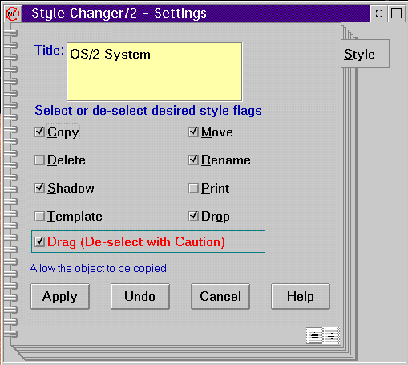

In order to illustrate what is required to create a complete Workplace Shell object that you can use constructively, a complete Workplace Shell SOM program is included here.
The example program is a usable Workplace Shell object that provides the facility to change the normally unchangable style flags of any Desktop object dropped on it. When you drop an object onto the Workplace Shell Styler, WPSTYLER will open the Settings notebook and display a Style settings page, as shown in the following figure:
On this page, you will see the current styles of the object and be able to change them. Using the Workplace Shell Styler, you can change the title in addition to the following behaviors:
The Workplace Shell Styler sample demonstrates the basic steps you need to do to create a Workplace Shell object:
The class name is called WPStyler and is derived from WPAbstract, which is derived from the WPObject root Workplace Shell Class. This means that WPStyler inherits the methods from WPAbstract, which, in turn, inherits all of the instance and class methods from WPObject. The implementation of the WPStyler object consists primarily of overrides to instance and class methods inherited from the WPObject and WPAbstract classes.